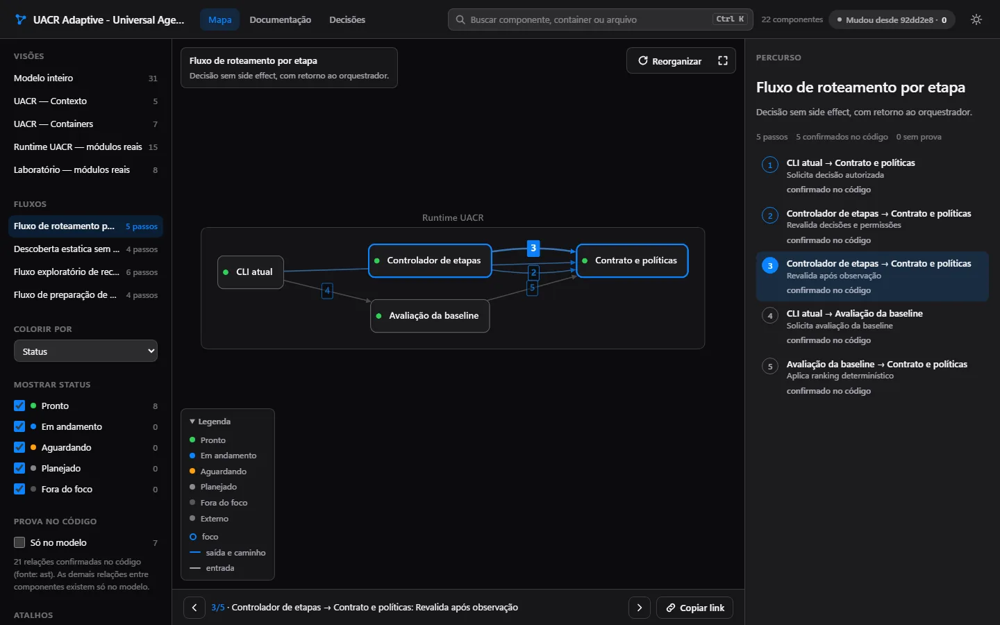
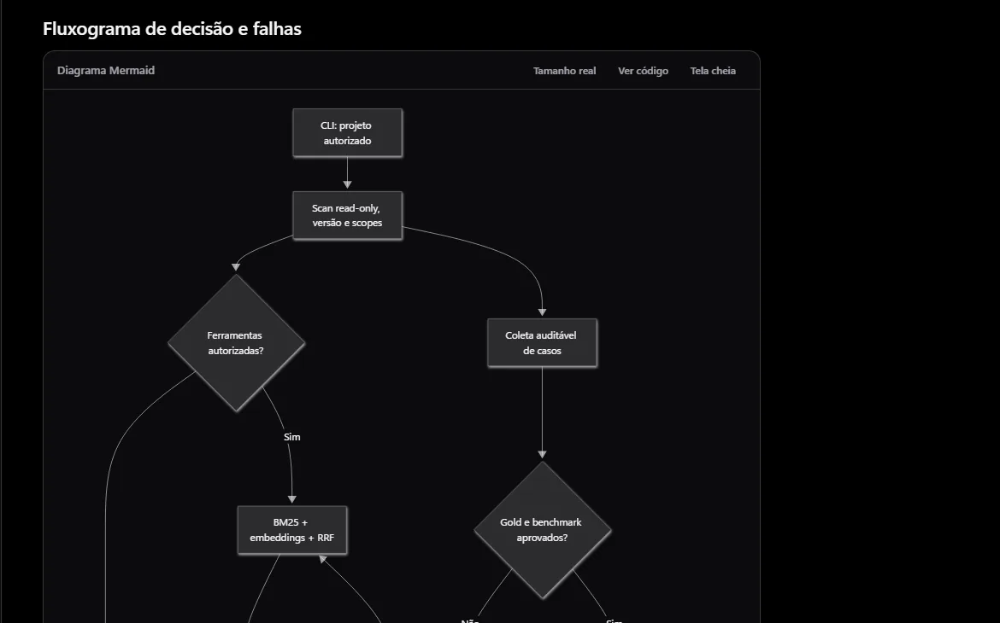
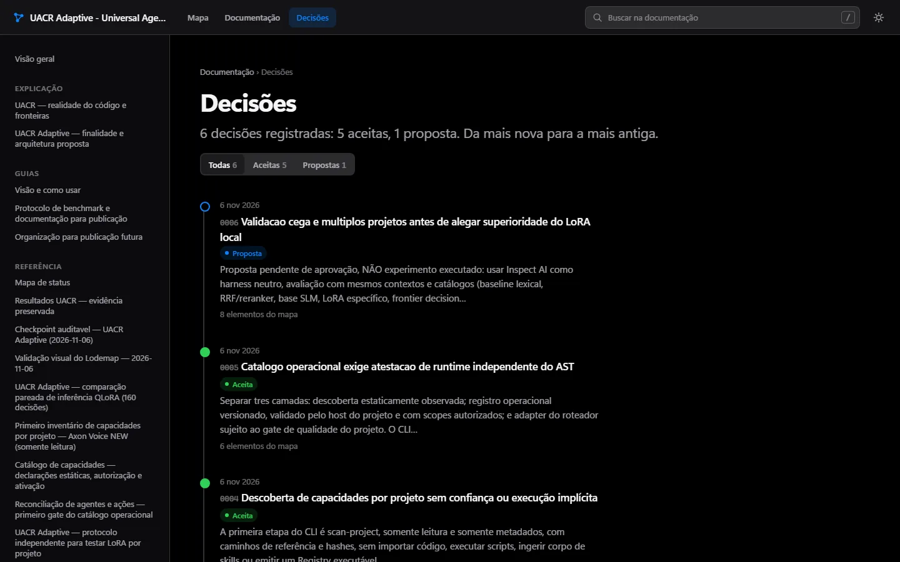

Lodemap
This pageThe project's map and docs. Works on its own, with no server. CodeGraph (token-free relationships) and Synapse (project lessons) are optional integrations.
Lodemap is a Claude Code skill. Agents read the repository and build a C4 map with animated flows, a docs reader and a test that fails when a module is left out. From then on, every commit updates it all with scripts only, with no model call.

The problem
Teams inherit systems nobody can explain end to end. Rewriting the docs takes weeks, and they go stale right after. Asking a model to "document everything" is expensive and gives no guarantee the text matches the code.
What it builds
The architecture model lives in your repository, in Structurizr DSL (the C4 standard), and is reviewed in pull requests like any code. Everything else is generated from it and runs locally, with no server.
System, containers, components per area, named relationships, views and dynamic flows. Every component has a status: ready, in progress, waiting, planned or out of focus.
workspace.dsl · model/ · views/Browse the views, play flows step by step with a link to each step, filter by status and see what changed since the last commit. Relationships with no proof in the code are flagged.
explorador/index.htmlDocs and decisions (ADRs) with search, table of contents, a decision timeline and Mermaid diagrams drawn offline. Every element mentioned links to the same spot on the map.
leitor/index.htmlA pytest that fails when any code module is left out of the model. The map cannot go stale silently: CI tells you.
tests/test_arquitetura_cobertura.pyEvery number tied to a component points to the file and the commit it came from. A test checks the source still exists.
metricas/metricas.jsonDerived Markdown docs, Obsidian vault notes with wikilinks, Structurizr Lite and a static site. Turn on only what you want.
-ComObsidian · -ComLite · -ComSite


The tool's own UI and messages are in Brazilian Portuguese.
How it works
Each step runs only when the one below cannot handle it. Cost goes up when the structure changes, not on every commit.
Lists modules, suggests relationships from the code graph (CodeGraph or AST) and regenerates map, reader and docs. With no structural change, work stops here.
Only for what the scripts could not classify. Read-only.
The only role that decides: cuts components, names relationships and draws flows. Goes through an objective quality gate.
Ties metrics to sources, runs the pipeline and checks coverage, links and scripts. Fixes from findings already written down.
| Agent | Model | Effort | Does |
|---|---|---|---|
lodemap-inventario | haiku | low | Lists modules, entry points and dependencies; does not edit |
lodemap-modelador | sonnet | high | Containers, components, relationships, views, flows and status |
lodemap-metricas | sonnet | low | Pulls numbers from evidence with file and commit checked |
lodemap-gerador | sonnet | medium | Templates, lodemap.json and the update pipeline |
lodemap-verificador | haiku | medium | Coverage, wikilinks, node --check and a headless browser; does not edit |
lodemap-revisor-visual | sonnet | high | Only when you ask for a visual change; compares before and after captures |
inventory→modeler→quality gate→metrics ∥ generator→verifier
No skill agent uses Opus. In "update on every merge" mode only scripts run; the modeler joins only if coverage fails or a module shows up without a component.
Proof
Every number has an evidence file and a date. The raw records are in references/benchmark-e-custo.md
and references/custo-equivalente.json, in the skill's repository.
atualizar.ps1 with the static site, 0 tokens · 2026-11-02Security audit of 2026-11-05: 0 critical findings; 3 high (2 fixed with tests, 1 documented in the README), 9 medium and 9 low. In the 3rd repository the explorer shows 22 components and 21 relationships confirmed in the code by the AST mode.
How it differs from generated wikis
Tools like DeepWiki and Google Code Wiki generate and host the docs for you, with chat over the code. It is a good product. Lodemap bets on something else: an architecture model that is versioned, checked by a test and cheap to keep.
| Generated, hosted wikis | Lodemap | |
|---|---|---|
| Where it lives | On the vendor's platform | In your git, in Structurizr DSL (C4), reviewable in pull requests |
| Updates | Code Wiki regenerates the docs after each change [1] | Token-free scripts on every commit; the model joins only when the structure changes |
| Coverage | On large repositories DeepWiki may leave folders out; you can list up to 30 pages (80 on Enterprise) in .devin/wiki.json [2] | A test fails if any module is left out of the map (63 of 63 in the proof run) |
| Cost | DeepWiki: low tier free; medium 5 to 10 ACUs and high 20 to 40 ACUs per wiki [2] | Floor of US$ 2.65 per map (measured once); an update with no structural change makes no model call |
| Private repositories | Code Wiki announced a Gemini CLI extension, with a waitlist, on 2025-11-13 [1] | Scripts run on your machine; model steps send the code they read to Anthropic, through the Claude Code you already use |
| What they do and we don't | Chat over the code and zero install | No chat of its own: your agent asks the questions, using the map |
Sources checked on 2026-11-05; claims about other products hold as far as could be checked that day. [1] Google Developers Blog, "Introducing Code Wiki". [2] Devin docs, "DeepWiki repository wikis".
Cost
Docs stay alive only if updating is free. Repetitive work goes to scripts, and the model joins only when the structure changes.
Diff, regeneration of the map, reader and docs, checks and the coverage test. Scripts only, 11 to 17 seconds.
Sonnet 5.5, one agent, 93 calls, 25 minutes, including 6 fixes to the skill itself. Quality gate 95.2.
floor: uncached input and cache writes were not recordedThe 1st run used Opus for everything, on a 98-module repository, and included writing the skill itself. The 2nd was a single Sonnet agent on another repository (63 modules): 64% fewer output tokens and 74% fewer cache reads.
floor at both ends; two different runs, not a controlled testThe same tokens at Haiku prices. The figure depends on whether each call stays under or over 100k prompt tokens.
projection, not yet measuredTokens come from the agents' logs, deduplicated per message, multiplied by the official API prices
(platform.claude.com/docs/en/about-claude/pricing, checked on 2026-11-05). Sonnet 5.5: US$ 10 per million output
tokens and US$ 0.10 per million cache reads. The runs used a Claude Code subscription, so the figure is the
API-equivalent cost, not a bill. Tokens, prices and what was not recorded in each run are in
references/custo-equivalente.json; the plano command reads its estimate from that file before you authorize anything.
Install
Requires Python 3.11+ and git. The installer prints every change, backs up everything it touches and reverts byte for byte.
# the public repository opens at launch git clone https://github.com/skarL007/lodemap && cd lodemap python -m lodemap instalar --perfil padrao # dry run: prints only python -m lodemap instalar --perfil padrao --aplicar # applies, with backups and a manifest
python -m lodemap plano --repo . # 0 tokens: modules, cost, time, files python -m lodemap consentir --repo . --escopos gerar,modelo --orcamento-mensal 5 python -m lodemap reverter # undoes the latest install
Known limits
atualizar.ps1 calls structurizr.bat and dot.exe. The installer, permission flow, new-map scaffold and tests also run on Linux (WSL Ubuntu).mindmap, architecture or math; the block shows a notice and keeps its text.Project status
The project's map and docs. Works on its own, with no server. CodeGraph (token-free relationships) and Synapse (project lessons) are optional integrations.
Project memory for agents, in Rust, with a pre-execution firewall, default agents and honest telemetry. See it in the portfolio.
The repository opens soon. Until then, reach out for a live demo or to try it on your code.